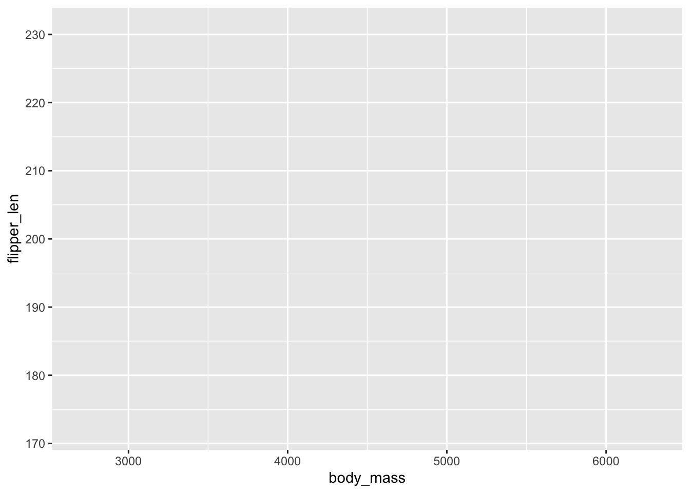
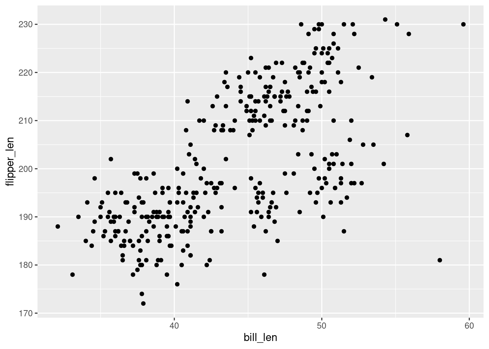
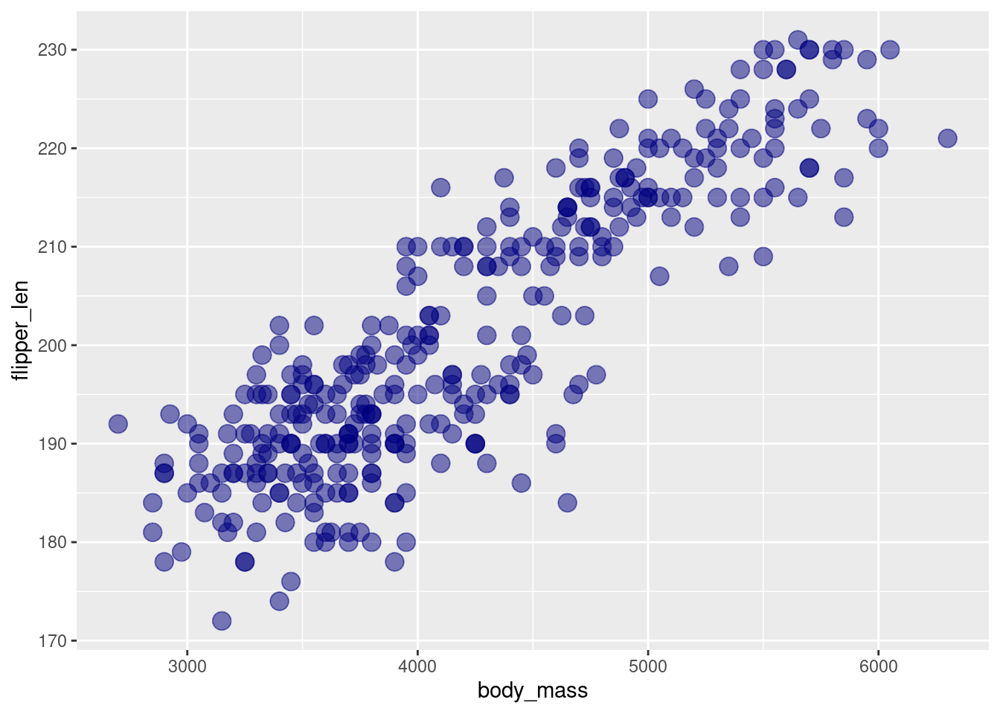
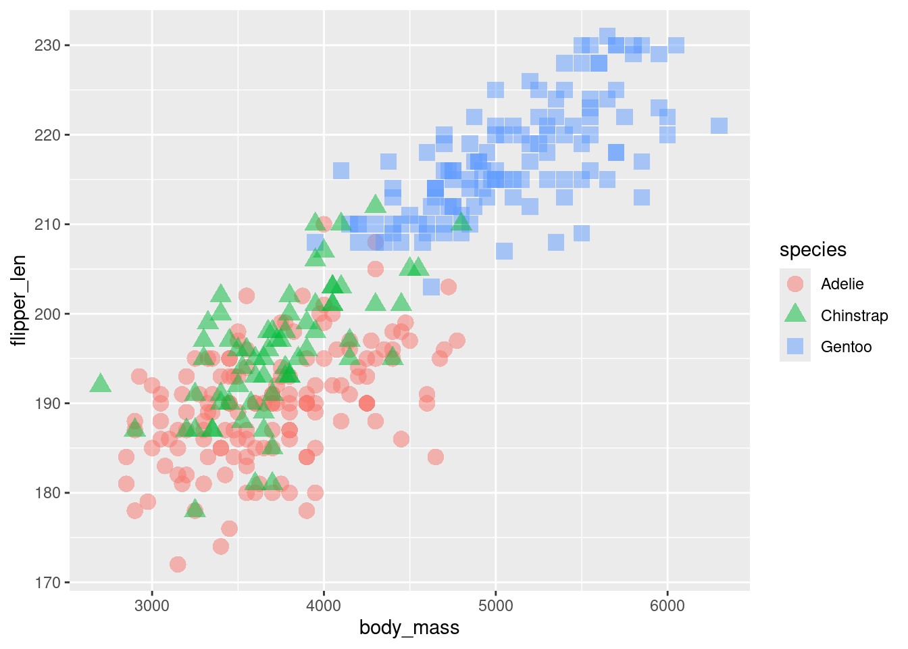
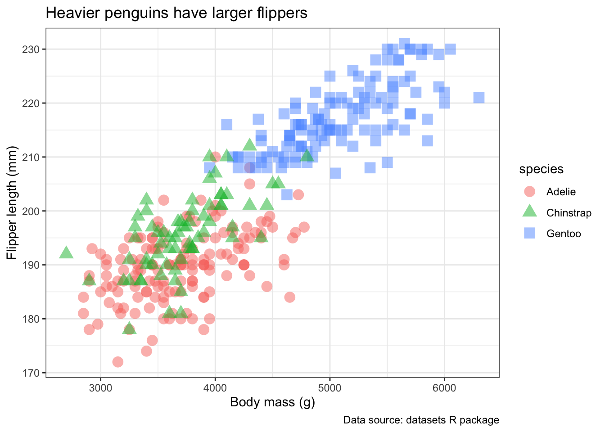

R
This R tutorial was adapted from Software Carpentry’s Intro to R and RStudio Lessons
Introduction to R/RStudio
R and RStudio are closely related but serve distinct roles in statistical computing and data analysis. R is an open-source programming language and computational environment designed for statistical analysis, data manipulation, and visualization. It provides the underlying engine responsible for executing code and performing computations. RStudio, in contrast, is an integrated development environment (IDE) that provides a user-friendly interface for working with R. It brings together tools such as a code editor, R console, workspace manager, plotting interface, package management, and file browser within a single environment. In simple terms, R performs the computations, while RStudio provides an organized and convenient interface through which users can write, execute, and manage R code.
- R: open-source programming language used for statistical computing, data analysis, and visualization.
- RStudio: integrated development environment (IDE) for R that provides a user-friendly interface for writing, editing, and executing R scripts.
Loging in to RStudio via the AWS instance
On your internet browser, please enter:
http://##.uhn-hpc.ca:8080
Replace ## by your student number.
You will be prompted to a login page on RStudio Server.
- Username:
ubuntu - Password:
G5L6VurwXi
RStudio default interface
- Source/Script Editor (top left): In your session, you first need to click on the new file icon and select an R script.
This is main area for writing and editing R scripts. Code written here can be saved as
.Rfiles and executed line by line, in selected sections, or an entire script. Multiple scripts can be opened using tabs. - Console (bottom left): The area where R code is executed. Commands can be entered directly into the console, and code sent from the Source Panel is executed here. Results, messages, warnings, and errors are displayed in this panel.
- Environment/History (top right): Displays objects currently stored in the R session such as variables, data frames, lists, and functions. The History tab provides access to commands that were previously executed.
- Files/Plots/Packages/Help (bottom right): A multipurpose panel containing several useful tools. Files provides navigation through directories and files. Plots displays generated figures. Packages allows users to view and manage installed R packages. Help displays documentation for R functions and packages.
Using R as a calculator
The simplest thing you could do with R is to do arithmetic:
Input
Output
R will print the answer with a preceding “[1]”. [1] is the first element of the line being printed in the console.
If you type and incomplete command, R will wait for you to complete it. This behavior is similar with Unix.
Input
Output
If you are using R from the command line or from within RStudio’s console, you need to use Ctrl + C to cancel the command. This applies to Mac users as well.
Cancelling a command is not only useful for killing incomplete commands: you can also use it to tell R to stop running code (for example, if it is taking much longer than you expect).
When using R as a calculator, the order of operations is the same as you would have learned back in school.
From highest to lowest priority:
- Parentheses:
(,). - Exponents:
^or**. - Multiply:
*. - Divide:
/. - Add:
+. - Subtract:
-
Mathematical functions
R has many built in mathematical functions. To call a function, we can type its name followed by open and closing parentheses. Functions take arguments as inputs, i.e., anything we type inside the parenthesis or a function is considered an argument. Depending on the function, the number of arguments can vary to none to multiple. The result of a function ** is an output**, this represents the mathematical processing that was done with the input argument(s).
Input (returns the working directory)
Input (trigonometry)
Output
Input (natural logarithm)
Output
Input (base-10 logarithm)
Output
Don’t worry about trying to remember every function in R. You can look them up on Google, or if you can remember the start of the function’s name, use the tab completion in RStudio.
This is one advantage that RStudio has over R on its own, it has auto-completion abilities that allow you to more easily look up functions, their arguments, and the values that they take.
Variables and assignment
We can store values in variables using the assignment operator <-:
Notice that this assignment does not print a value. Instead, we stored (for later usage) in something called a variable x. x now contains the value 0.025.
If you type the name of your variable and press Enter:
Output
If you explore the Environment tab in RStudio (top left panel), you will see that x and its value have appeared.
We can use our variable instead of a number in any calculation that expects a number.
Input
Output
Variables can also be reassigned:
x used to contain the value 0.025. It now has the value 100.
Assignment values can contain the variable being assigned to:
Variable names can contain letters, numbers, underscores and periods, but no spaces. They must start with a letter or a period follow by a letter (they cannot start with a number or an underscore). Variables beginning with a period are hidden variables.
Different people use different conventions for long variable names, these include:
- periods.between.words
- underscore_between_words
- camelCaseToSeparateWords
What you use is up to you, but be consistent.
It is also possible to use the = operator for assignment.
R packages
It is possible to add extra functions to R by using a package.
The functions we used so far getwd(), sin(), log(), log10() are all pre-installed in the R Base Package.
As of August 2026, there are a total of 24,776 available R packages in the Comprehensive R Archive Network (CRAN). If we wanted for all these packages to be loaded at the moment we launch RStudio, it would take a supercomputer to do so. This is the reason of why specialized packages need to be installed and loaded prior to their functions be accessible for us.
Let’s first create a variable that has a list of observations:
Let’s assume we want to normalize the values in our list so that they fall within a specific range, such as 0 and 1. We could implement the logic ourselves and create an algorithm to perform this transformation. However, there is often a simpler solution. For many common tasks, it is likely that someone has already encountered the same problem and developed a reliable solution that we can use.
The function we want to use is rescale(). If you try to use it passing your list as an argument:
Input
You will get an error message saying:
Output
This means that in our R Environment, there is no package that implements the rescale() function.
For that, we need first to install the package that contains this function:
After it is downloaded, we need to load the package (remember that if every single package we have installed was pre-loaded, we would need lots of computational resources). To load a package:
Now, if you try to use the function rescale() again, it should work:
Input
Output
Seeking Help with R
Learning Objectives
- To be able to read R help files for functions, data objects and special operators.
- To be able to use CRAN task views to identify packages to solve a problem.
Reading Help Files
R, and every package, provide help files for functions or data objects. The general syntax to search for help on any function, “function_name”, from a specific function that is in a package loaded into your R session is:
For example take a look at the help file for mean()
This will load up a help page in RStudio.
Each help page is broken down into sections:
Description: A brief description of what a function does or what a data object contains.Usage: For functions, shows how the function is called, including its arguments and their default values. For data objects, shows the name of the object and - sometimes how it is structured or loaded.Arguments: For functions, describes each argument and the type of input it expects. This section is usually absent for data objects.Format: Common for data objects; describes the structure of the object, such as the number of observations and variables, variable names, data types, and what each variable represents.Details: Provides additional information about how the function works or important background information about the data object.Value: For functions, describes what the function returns. This section is usually absent for data objects.Source: Common for data objects; describes where the data came from or provides a reference to the original source.Examples: Provides example code demonstrating how to use the function or work with the data object.
Different functions/objects might have different sections, but these are the main ones you should be aware of.
Data Objects
R by default comes with a collection of built-in data objects from the alphabets and months of the year to datasets collected about penguins and tooth growth in guinea pigs. These objects provide convenient examples for learning how to explore, manipulate, summarize, and visualize different types of data in R. Additionally, many R packages come with their own data objects, such as example datasets, reference databases, lookup tables, and precomputed results. Understanding what these data objects contain and how they are structured can be essential for using certain packages effectively.
Getting Help with Packages
Many packages come with “vignettes”: tutorials and extended example
documentation. Without any arguments, vignette() will list all
vignettes for all installed packages; vignette(package="package-name")
will list all available vignettes for package-name, and
vignette("vignette-name") will open the specified vignette.
If a package doesn’t have any vignettes, you can usually find help by
typing help("package-name").
RStudio also has a set of excellent cheatsheets for many packages.
When You Remember Part of the Function Name
If you’re not sure what package a function is in or how it’s specifically spelled, you can do a fuzzy search:
A fuzzy search is when you search for an approximate string match. For example, you may be looking for a function to compute standard deviation. You can do a fuzzy search to help you identify the function:
When You Have No Idea Where to Begin
If you don’t know what function or package you need to use CRAN Task Views is a specially maintained list of packages grouped into fields. This can be a good starting point.
Other Ways to Get Help
R’s built-in documentation is not always enough, especially when you are trying to solve a specific problem. Other useful sources of help include:
- Package websites: Popular packages often have dedicated websites containing documentation, tutorials, and examples.
- Stack Overflow: Searching for the error message or problem you are encountering can often lead to solutions from other R users.
- R community forums: Communities such as Posit Community provide a place to ask questions and discuss R-related problems.
- GitHub: Package repositories can be useful for checking known issues, reporting bugs, and finding examples of how a package is being developed or used.
- AI/LLMs: AI tools such as ChatGPT can help explain R concepts, interpret error messages, suggest functions or packages, and generate or troubleshoot code. However, AI-generated answers can be incorrect or outdated, so you should verify important information against official documentation and other reliable sources.
Data Structures, Data Types and Data frames
Learning Objectives
- To begin exploring data frames and understand how they are related to vectors.
- To be able to ask questions from R about the type and structure of an object.
- To be able to manipulate rows and columns of a data frame.
One of R’s most powerful features is its ability to work with tabular data, such as data you might already have in a spreadsheet or CSV file. Tabular data in R is commonly stored as a data frame, which can be thought of as a collection of vectors arranged into columns. Each vector represents a single column, while each row typically represents an observation or record.
What is a vector?
In R, a vector is a sequence of values that all have the same data type. Vectors are one of the fundamental data structures in R and form the individual columns of a data frame.
Some of the most common data types you will encounter in R include:
Double: Numeric values that can contain decimals, such as 3.14 or 10.5.Integer: Whole numbers, such as 1, 5, or 100.Character: Text values, such as “Hello” or “world”.Factor: Categorical values that represent a predefined set of categories, such as “Control” and “Treatment” or “Low”, “Medium”, and “High”.Logical: Boolean values that can be either TRUE or FALSE.
Let’s start by creating a toy data frame containing information about three different penguins.
pg <- data.frame(
species = c("Adelie", "Chinstrap", "Gentoo"),
island = c("Torgersen", "Dream", "Biscoe"),
bill_len = c(39.1, 46.5, 46.1),
flipper_len = c(181, 192, 211),
is_male = c(TRUE, FALSE, FALSE)
)
pg## species island bill_len flipper_len is_male
## 1 Adelie Torgersen 39.1 181 TRUE
## 2 Chinstrap Dream 46.5 192 FALSE
## 3 Gentoo Biscoe 46.1 211 FALSE
We can begin exploring our dataset right away. Individual columns can be accessed by specifying the name of the data frame followed by the $ operator and the name of the column:
This returns the bill_len column as a vector. Because it is a numeric vector, we can perform mathematical operations directly on its values:
Notice the operation is applied to every value in the vector.
Data Types
To know the data types each of the column in our toy dataset, there are several methods to do this:
- Use
str()to examine the structure of the data frame
## 'data.frame': 3 obs. of 5 variables:
## $ species : chr "Adelie" "Chinstrap" "Gentoo"
## $ island : chr "Torgersen" "Dream" "Biscoe"
## $ bill_len : num 39.1 46.5 46.1
## $ flipper_len: num 181 192 211
## $ is_male : logi TRUE FALSE FALSEstr() provides a compact overview of the entire data frame, including
its dimensions, column names, data types, and some example values. This
is often one of the first functions you will use when exploring a new
dataset.
- Use
summary()to summarize each column
## species island bill_len flipper_len
## Length:3 Length:3 Min. :39.1 Min. :181.0
## Class :character Class :character 1st Qu.:42.6 1st Qu.:186.5
## Mode :character Mode :character Median :46.1 Median :192.0
## Mean :43.9 Mean :194.7
## 3rd Qu.:46.3 3rd Qu.:201.5
## Max. :46.5 Max. :211.0
## is_male
## Mode :logical
## FALSE:2
## TRUE :1
##
##
## summary() provides a summary appropriate for the type of data in each
column. For numeric columns, this includes statistics such as the
minimum, median, mean, and maximum. For other data types, the
information displayed will differ.
- Use
typeof()to inspect the underlying type of a specific column
typeof(pg$species)
## [1] "character"
typeof(pg$bill_len)
## [1] "double"
typeof(pg$flipper_len)
## [1] "double"
typeof(pg$is_male)
## [1] "logical"Notice that flipper_len is also stored as a double, even though all of
its values are whole numbers. In R, entering a number such as 181
creates a double by default. To explicitly create an integer, the number
is followed by L, for example:
For everyday data analysis, you will often use str() to quickly inspect an entire dataset and functions such as typeof() when you need to investigate a particular object in more detail.
Manipulating data frames
Now that we know how to access parts of a data frame, let’s try manipulating the data stored within it. There are many ways a data frame can be manipulated. For example, we can add or remove columns, keep specific observations, or modify the values of an existing column.
- Add a new column
Let’s multiply the flipper length by two and store the resulting vector as a new column:
## species island bill_len flipper_len is_male flip_length_x2
## 1 Adelie Torgersen 39.1 181 TRUE 362
## 2 Chinstrap Dream 46.5 192 FALSE 384
## 3 Gentoo Biscoe 46.1 211 FALSE 422- Remove a column
One way to exclude a column is to select only the columns that we want to keep. Data frames can be subset using the notation:
data_frame[rows, columns]For example, we can keep all rows and only the first five columns:
## species island bill_len flipper_len is_male
## 1 Adelie Torgersen 39.1 181 TRUE
## 2 Chinstrap Dream 46.5 192 FALSE
## 3 Gentoo Biscoe 46.1 211 FALSELeaving the space before the comma empty means that we want to keep all
rows, while 1:5 specifies that we want to keep columns 1 through 5.
- Keep specific observations
The same notation can be used to select specific rows. For example, we can keep the first and third penguins:
## species island bill_len flipper_len is_male
## 1 Adelie Torgersen 39.1 181 TRUE
## 3 Gentoo Biscoe 46.1 211 FALSEHere, c(1, 3) specifies the rows we want to keep, while leaving the
space after the comma empty means that we want to keep all columns.
We can also specify both rows and columns:
## species island bill_len flipper_len is_male
## 1 Adelie Torgersen 39.1 181 TRUE
## 3 Gentoo Biscoe 46.1 211 FALSEThis keeps rows 1 and 3 and columns 1 through 5.
- Modify an existing column
Existing columns can also be replaced with new values. For example, we
can multiply every value in flipper_len by two:
## species island bill_len flipper_len is_male
## 1 Adelie Torgersen 39.1 362 TRUE
## 2 Chinstrap Dream 46.5 384 FALSE
## 3 Gentoo Biscoe 46.1 422 FALSEThe <- assignment operator is important here. Without it,
pg$flipper_len * 2 would calculate and return the new values but would
not modify the original data frame.
Reading and Writing Data Frames
Data stored in R can be written to a file so that it can be saved or used by other programs. Similarly, data stored in external files can be read into R as data frames.
Writing a data frame
The write.table() function provides a flexible way to write tabular
data to a text file:
write.table(
pg, # data object to write
file = "penguins_dataset.csv", # name of the output file
quote = FALSE, # whether to quote character values
sep = ",", # column separator: "," for CSV, "\t" for TSV
row.names = FALSE, # whether to include row names
col.names = TRUE # whether to include column names
)Because we specified sep = ",", the resulting file is a
comma-separated values (CSV) file.
R also provides the convenience function write.csv() specifically for
writing CSV files:
Creating Plots with ggplot2
Learning Objectives
- To be able to use ggplot2 to generate publication-quality graphics.
- To apply data, geometry and aesthetic layers to a ggplot plot.
- To manipulate the aesthetics of a plot using different colors and shapes
- To save a plot created with ggplot to disk.
Plotting our data is one of the best ways to quickly explore it and the various relationships between variables.
There are various plotting systems available in R, but today we’ll be learning about the ggplot2 package because it provides a flexible and powerful system for creating publication-quality graphics.
ggplot2 is built on the grammar of graphics, the idea that any plot
can be built from the same set of components: a data set, mapping
aesthetics, and graphical layers:
Data sets are the data that you, the user, provide.
Mapping aesthetics are what connect the data to the graphics. They tell ggplot2 how to use your data to affect how the graph looks, such as changing what is plotted on the X or Y axis, or the size or color of different data points.
Layers are the actual graphical output from ggplot2. Layers determine what kinds of plot are shown (scatterplot, histogram, etc.), the coordinate system used (rectangular, polar, others), and other important aspects of the plot. The idea of layers of graphics may be familiar to you if you have used image editing programs like Photoshop, Illustrator, or Inkscape.
Let’s start off building an example using the entire penguins dataset.
## 'data.frame': 344 obs. of 8 variables:
## $ species : Factor w/ 3 levels "Adelie","Chinstrap",..: 1 1 1 1 1 1 1 1 1 1 ...
## $ island : Factor w/ 3 levels "Biscoe","Dream",..: 3 3 3 3 3 3 3 3 3 3 ...
## $ bill_len : num 39.1 39.5 40.3 NA 36.7 39.3 38.9 39.2 34.1 42 ...
## $ bill_dep : num 18.7 17.4 18 NA 19.3 20.6 17.8 19.6 18.1 20.2 ...
## $ flipper_len: int 181 186 195 NA 193 190 181 195 193 190 ...
## $ body_mass : int 3750 3800 3250 NA 3450 3650 3625 4675 3475 4250 ...
## $ sex : Factor w/ 2 levels "female","male": 2 1 1 NA 1 2 1 2 NA NA ...
## $ year : int 2007 2007 2007 2007 2007 2007 2007 2007 2007 2007 ...Building a ggplot
The main function used to create a plot is ggplot(), which lets R know that we are creating a new plot. Any of the arguments we give the ggplot function
are the global options for the plot: they apply to all layers on the
plot.

Here we called ggplot and told it what data we want to show on our
figure. This is not enough information for ggplot to actually draw
anything. It only creates a blank slate for other elements to be added
to.
Next, we need to specify the mapping aesthetics using the aes() function.
The aes() function tells ggplot2 how variables in the data should map to aesthetic properties of the figure. For example, we can specify which columns should determine the x and y positions.

Here we told ggplot we want to plot the body_mass column of the
penguins data frame on the x-axis, and the flipper_len column on the
y-axis. Notice that we didn’t need to explicitly pass aes these
columns (e.g. aes(x = penguins$body_mass, y = penguins$flipper_len)), this is because ggplot
is smart enough to know to look in the data for that column!
However, we still haven’t told ggplot2 how to display these observations. To do this, we add a graphical layer using one of the geom_*() functions.

Here we used geom_point, which tells ggplot we want to visually
represent the relationship between x and y as a scatterplot of
points.
Notice the + symbol after ggplot(). In ggplot2, we use + to progressively add new layers and components to our plot.
Changing point aethetics
We can adjust the appearance of individual data points by specifying aesthetic properties, such assize and colour arguments inside geom_point()
ggplot(
data = penguins,
mapping = aes(x = body_mass, y = flipper_len)
) +
geom_point(size = 4, colour = "navyblue")
After increasing the size of the points, we can see that many observations overlap with each other, forming clusters that can make the visualization more difficult to interpret.
One strategy for dealing with overlapping points is to adjust alpha, which controls the transparency of graphical elements.
ggplot(
data = penguins,
mapping = aes(x = body_mass, y = flipper_len)
) +
geom_point(size = 4, colour = "navyblue", alpha = 0.5)
An alpha value of 1 is completely opaque, while an alpha value closer to 0 is increasingly transparent. By making the points partially transparent, areas containing many overlapping observations become easier to identify.
Mapping aesthetics to variables
So far, all observations have been displayed using the same colour. We can introduce another dimension to our plot by mapping the colour aesthetic to the species column, i.e. aes(colour = species)
Instead of assigning every point the same colour, we will colour each point according to its species
ggplot(data = penguins, mapping = aes(x = body_mass, y = flipper_len, colour = species)) +
geom_point(size = 4, alpha = 0.5)
Notice an important difference between this plot and our previous example.
When we write:
we are setting the colour of every point to the same value.
In contrast, when we write:
we are mapping the colour aesthetic to a variable in the data. ggplot2 therefore assigns different colours to the different species and automatically generates a legend.
This distinction between setting an aesthetic and mapping an aesthetic is an important concept when working with ggplot2.
We can create even greater contrast between species by also mapping the shape aesthetic to species.
ggplot(
data = penguins,
mapping = aes(x = body_mass, y = flipper_len, colour = species, shape = species)
) +
geom_point(size = 4, alpha = 0.5)
Now, observations belonging to different species are represented using both different colours and different shapes.
Mapping the same variable to multiple aesthetics can also improve accessibility because the groups can still be distinguished when colour differences are difficult to perceive.
Adding labels and themes
Let’s finalize our plot by adding informative axis labels, a title, and a figure caption using the labs() function.
ggplot(
data = penguins,
mapping = aes(x = body_mass, y = flipper_len, colour = species, shape = species)
) +
geom_point(size = 4, alpha = 0.5) +
labs(
x = "Body mass (g)",
y = "Flipper length (mm)",
title = "Heavier penguins have larger flippers",
caption = "Data source: datasets R package",
) +
theme_bw() # to remove the grey background
Saving a ggplot
Once we are satisfied with our plot, we can save it to disk using the ggsave() function.
By default, ggsave() saves the most recently generated plot.
The file format is determined automatically from the extension supplied to filename. For example, we could save the figure as a PDF by specifying "penguins_plot.pdf" instead.
For greater control, we can assign our plot to an R object.
p <- ggplot(
data = penguins,
mapping = aes(x = body_mass, y = flipper_len, colour = species, shape = species)) +
geom_point(size = 4, alpha = 0.5) +
labs(
x = "Body mass (g)",
y = "Flipper length (mm)",
title = "Heavier penguins have larger flippers",
caption = "Data source: datasets R package",
) +
theme_bw() # to remove the grey backgroundWe can then explicitly tell ggsave() which plot object we want to save using the plot argument.
Assigning plots to objects is particularly useful when working with multiple plots because it allows us to modify, reuse, and save individual plots without having to recreate them.